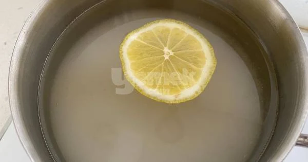
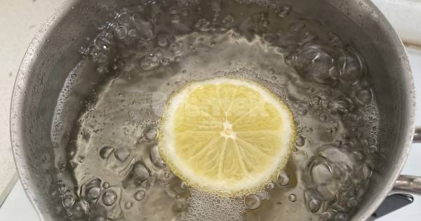
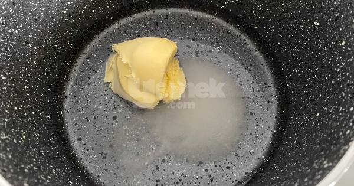
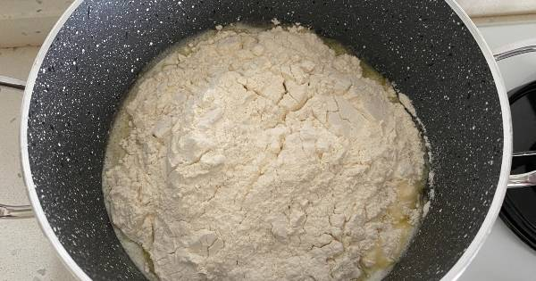
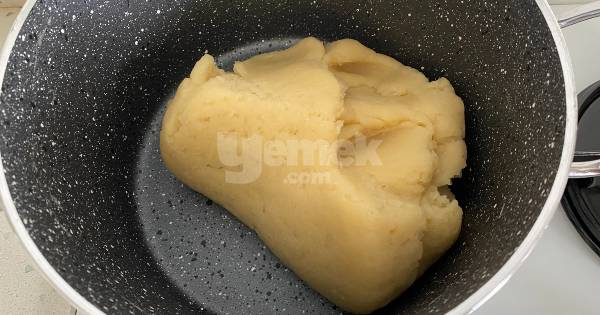
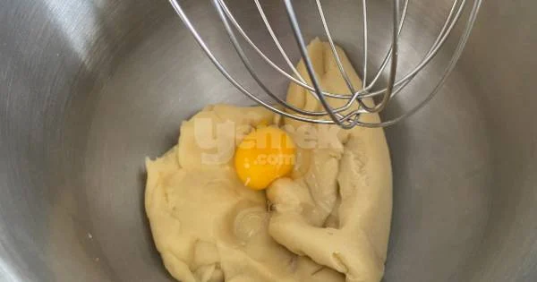
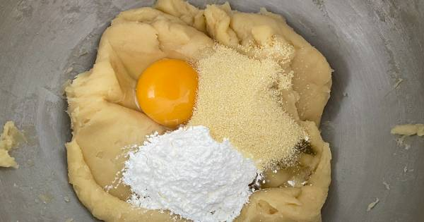
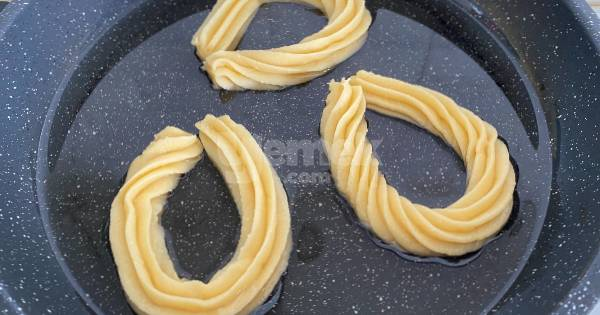
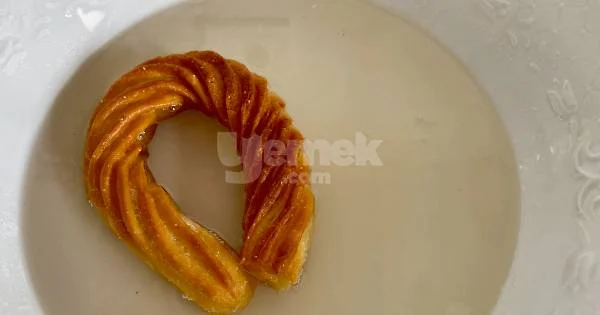

Şerbet için uygun bir tencereye şeker su ve limon dilimi ekleyin.

Şeker eriyince kadar karıştırın. Şeker eriyip kaynamaya başladıktan sonra ocağın altını kısın ve 20 dakika kaynatın. Ocaktan alın ve soğumaya bırakın.

Tencereye su, tereyağı, şeker ve tuzu ekleyin.

Tereyağı eriyip su kaynamaya başlayınca üzerine unu ekleyin. Sürekli karıştırarak kıvam almasını sağlayın.

5 kadar kadar bu şekilde karıştırarak pişirin. Ayrı bir kaba alarak soğumaya bırakın.

Hamur soğuduktan sonra 1 adet yumurtayı ekleyip mikserle hamura yedirin.

İkinci yumurtayı da kırıp üzerine nişasta ve irmiği ekleyip tekrar çırpın. Son yumurtayı da ekleyip hamura yedirin.

Hamuru toparlayıp sıkma torbasına alın.

Tavaya yağı ekleyin. Yağın iyice kızmasını sağlayın. Hamurdan halka şeklinde tavaya sıkın. Ocağın altını açın ve kısık ateşte arkalı önlü kızartın. Çıtır çıtır olması için yavaş yavaş pişmesi gerekiyor.
Kızaran tatlıları soğuk şerbete alın. Şerbette 1 dakika kadar bekletin.

Servis tabağına alın. Fıstıkla süsleyip servis edebilirsiniz. Afiyet olsun.